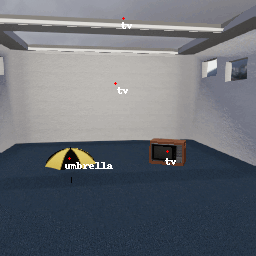
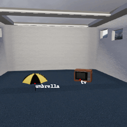
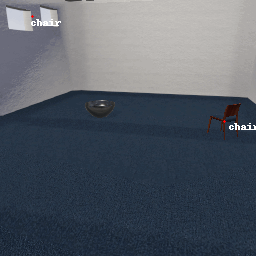

The gif below shows the outputs of the object detector Faster R-CNN on one of the scenes from our dataset, rendered in the simulation environment ThreeDWorld:

These faulty object detector are input into the MetaCOG model, which uses Spelke object principles (e.g., object permanence) to infer which objects are where.
Here are MetaCOG's inferences on this scene:

These results are not unique to Faster R-CNN. Here's Retinanet on another scene:

And are MetaCOG's inferences on this scene:

With experience, MetaCOG builds a metacognitive representation of the object detector's performance -- that is, what the detector tends to miss and hallucinate -- so as to make better inferences over time. This is all done without any feedback about the ground-truth object labels.